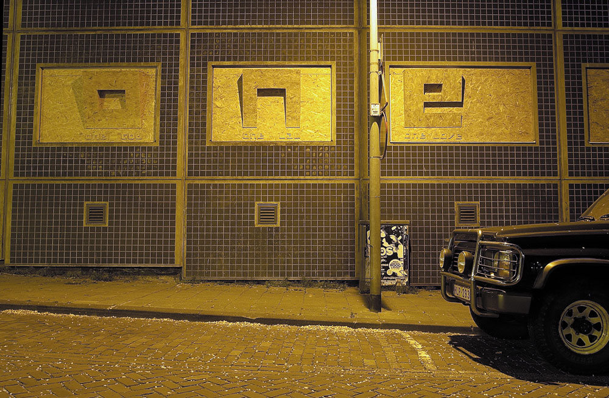
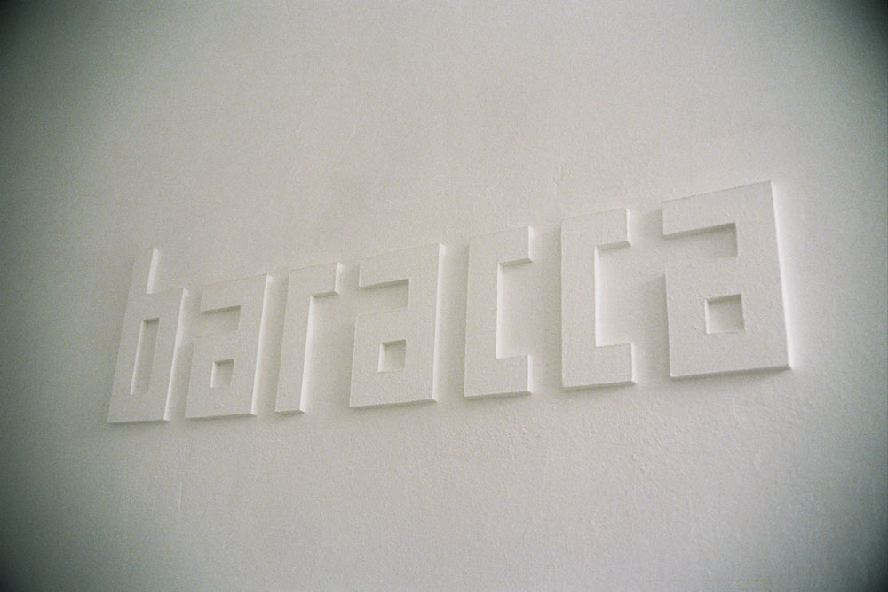
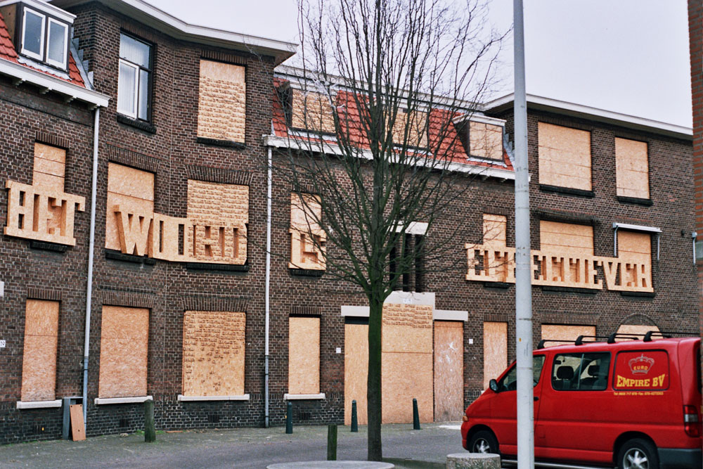
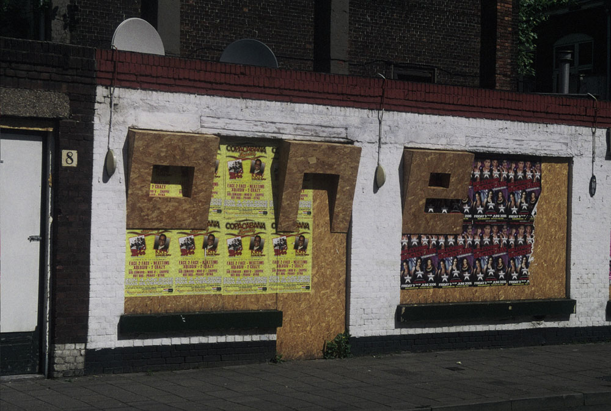
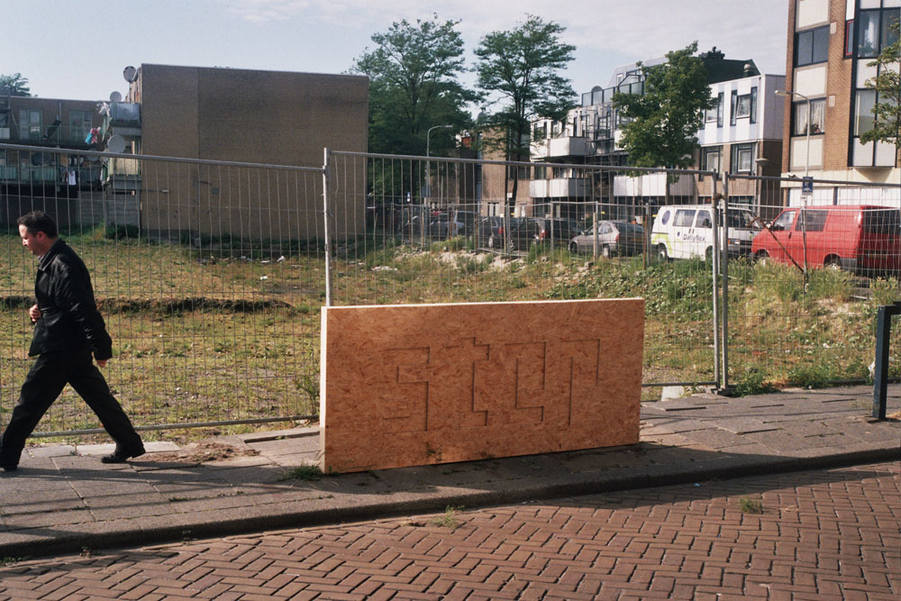
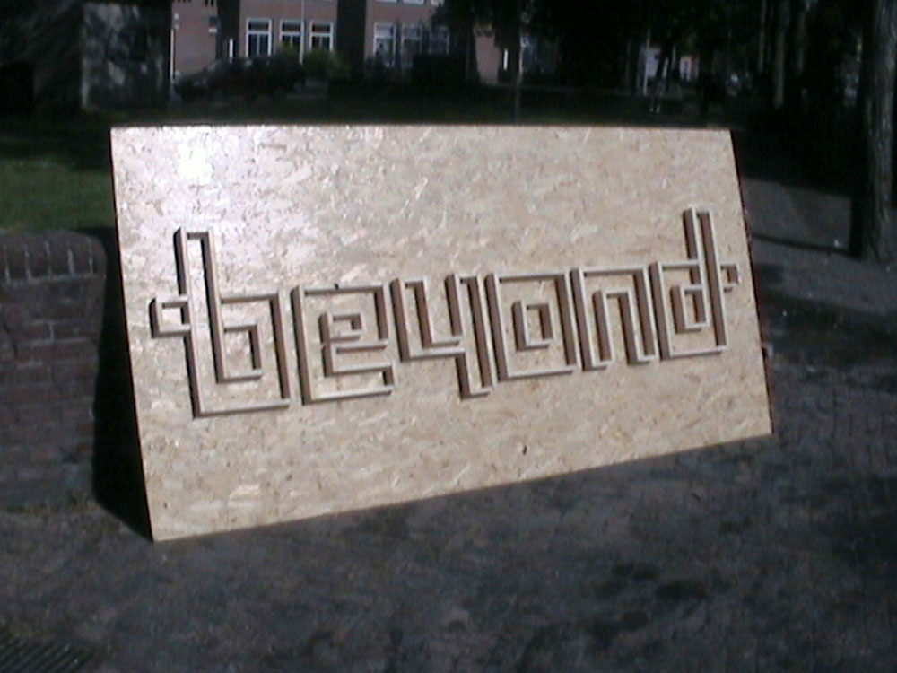
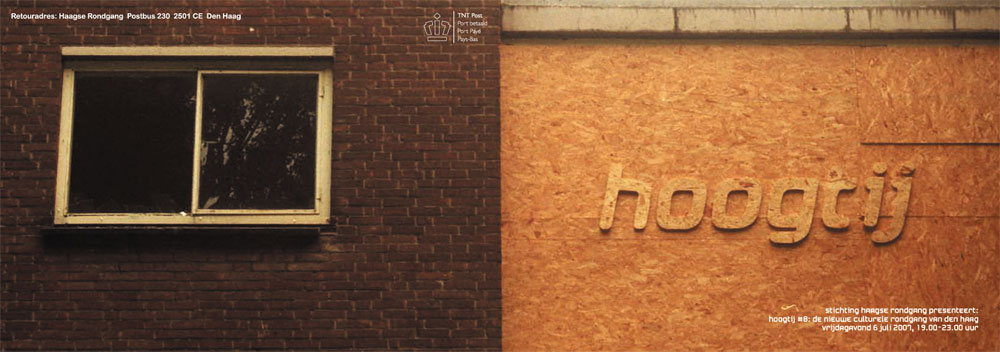
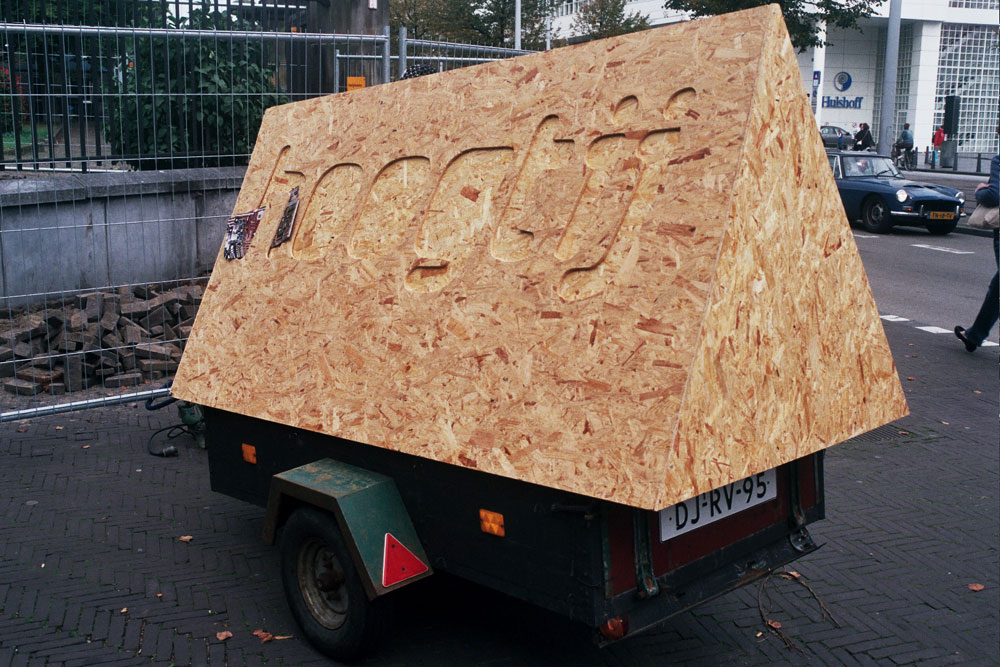
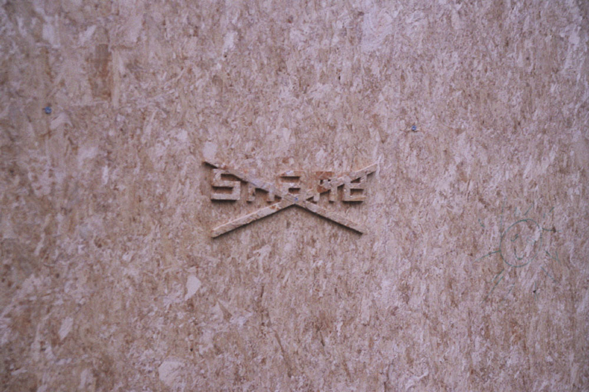

| < vorige | Terug naar overzicht |
Fontscapes Project / 2004
Foto's:
Fontscape#1 One [one god, one law, one love] op Zwarte Madonna Den Haag
Fontscape#2 Baracca in Zuidwal Den Haag
Fontscape#3 Het woord is effectiever in Transvaal Den Haag
Fontscape#4 One [step beyond] in de Schilderswijk Den Haag
Fontscape#5 [one] step [beyond] in de Schilderswijk Den Haag
Fontscape#6 [one step] beyond in de Schilderswijk Den Haag
Fontscape#7 Hoogtij in Mariahoeve Den Haag
Fontscape#8 Hoogtij.2 op het Spuiplein Den Haag
Fontscape#9 Shame, Regret etc....o.a.in de Mauritskade Den haag
www.baracca.nl >








